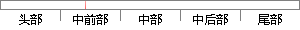

这里包括用户任务和系统任务的创建、任务的挂起和恢复、任务的删除等。
片段位置图

相似结果
相似片段：·许多嵌入式操作系统不划分“系统空间”和“用户空间”。·嵌入式操作系统通常...管理的各种函数调用,包括创建任务、删除任务、改变任务的优先级、任务挂起和恢复...
| 标题 | 《嵌入式非对称多处理器操作系统的构建》 |
| 对比库 | 中国学位论文全文数据库 |
| 作者 | 程昊 |
| 机构 | 太原理工大学 |
| 分类 | 计算机软件与理论 |
| 年份 | 2006 |
| 相似率 | 91.67% （严重抄袭） |
※ 片段修改建议 ※
近似词参考：- 恢复：规复
- 创建：建立 创立
- 包括：包罗 包孕 包含 囊括
- 系统：体系
- 任务：使命 义务
系统自动生成语句：这里包罗用户使命和体系使命的建立、使命的挂起和规复、使命的删除等。
注：本片段修改建议为系统自动生成，仅供参考。